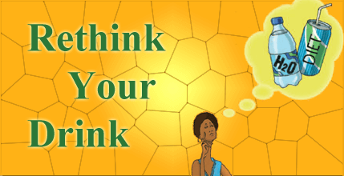

The obesity epidemic in the United States continues to increase. Two out of three adults and one out of three children in the United States are overweight or obese. Increase in overweight among young children is of significant concern.
Recently, 100% fruit juice and sweetened fruit drinks have received considerable attention as potential sources of high-energy beverages that could be related to the prevalence of obesity among young children.
On average, preschool children drank < 6 oz/day 100% fruit juice. Increased beverage consumption was associated with an increase in the total energy intake of the children. Consumption of sugar-sweetened beverages and artificially sweetened beverages was associated with Body Mass Index (BMI) and percentage body fat increases in children.
Sugar-sweetened beverages are linked to obesity. Sugar-sweetened beverages are a major source of free sugar intake in both children and adults, and are an important contributor to obesity and obesity-related diseases, including type 2 diabetes. An incremental reduction in free sugars added to sugar-sweetened beverages without the use of artificial sweeteners is predicted to reduce the prevalence of overweight, obesity, and type 2 diabetes.
A 40% reduction in free sugars added to sugar-sweetened beverages over 5 years would lead to an average reduction in energy intake of 38.4 kcal per day by the end of the fifth year.
This would lead to an average reduction in steady-state bodyweight of 1.20 kg in adults, resulting in a reduction in the prevalence in adults of overweight by 1.0 percentage point and obesity by 2.1 percentage points.
This reduction would lead to a reduction of roughly 0.5 million adults from being overweight and 1 million adults from being obese, which in turn would prevent about 274 000–309 000 incident cases of obesity-related type 2 diabetes over the two decades after the predicted reduction in bodyweight is achieved.
If fruit juices were excluded from the category of sugar-sweetened beverages (because of potential challenges for reformulation), the corresponding reductions in energy intake and steady-state bodyweight would be 31.0 kcal per day and 0.96 kg , respectively.
These reductions would result in a 0.7 percentage point (0.3 million) reduction in overweight and a 1.7 percentage point (0.8 million) reduction in obesity, which would in turn prevent about 221 000–250 000 cases of type 2 diabetes over two decades after the predicted reduction in bodyweight is achieved.
The predicted effect was greater in adolescents, young adults, and individuals from low-income families (who consume more sugar-sweetened beverages).
Evidence suggests that excessive intake of added sugars has adverse effects on cardio metabolic health.
74% of products in the US food supply contain caloric or low-calorie sweeteners, or both.
Of all packaged foods and beverages purchased by a nationally representative sample of US households in 2013, 68% (by proportion of calories) contain caloric sweeteners and 2% contain low-calorie sweeteners.
Sales of sugar-sweetened beverages around the world, in terms of calories sold per person per day and volume sold per person per day, shows that the four regions with the highest consumption are North America, Latin America, Australasia, and Western Europe.
Fastest absolute growth in sales of sugar-sweetened beverages by country in 2009–14 was seen in Chile.
Action is needed to tackle the high levels and continuing growth in sales of such beverages worldwide.
Many governments have initiated actions to reduce consumption of sugar-sweetened beverages in the past few years, including taxation (eg, in Mexico); reduction of their availability in schools; restrictions on marketing of sugary foods to children; public awareness campaigns; and positive and negative front-of-pack labeling.
Evidence shows that the excessive consumption of sugar is not only a major contributor to the epidemic of obesity but is also leading to increased prevalence of diabetes and tooth decay in children and adults.
Water is the best drink for children. It is calorie- free, hydrating, and low-cost. Encourage children to drink water whenever they are thirsty.
Do not serve sugar-sweetened beverages (like soda, fruit drinks, sports drinks, and fruit-ades); these drinks provide a lot of sugar and calories that children’s bodies don’t need. Children do not need sport and energy drinks because most sports drinks are designed for endurance athletes who exercise for hours at high intensity. Sports drinks contain lots of sugar and calories.
Sugary sweetened beverages (SSB) contain added sugar and include energy drinks, squash, fizzy and carbonated ‘non-diet’ soft drinks. ‘Diet’ soft drinks are not termed SSB’s as they contain little or no added sugar; however, most are still acidic enough to harm the teeth if consumed too often. Pure fruit juices contain natural sugar, together with some vitamins and minerals.Drinking water in place of Sugar Sweetened Beverages or fruit juices is associated with lower long-term weight gain.
Fruit juice has a similar energy density and sugar content to SSB;
250 ml of Apple juice typically contain 110Kcal and 26 g of sugar;
250 ml of cola typically contains 105 Kcal and 26.5 g of sugar. High Fruit Juice intake is associated with increased risk of diabetes.
Drink Water instead of Sugary drinks.